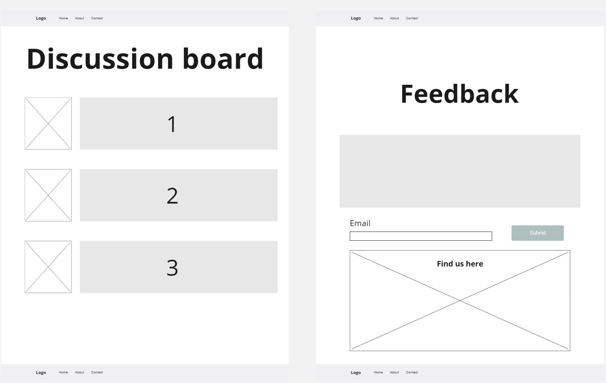
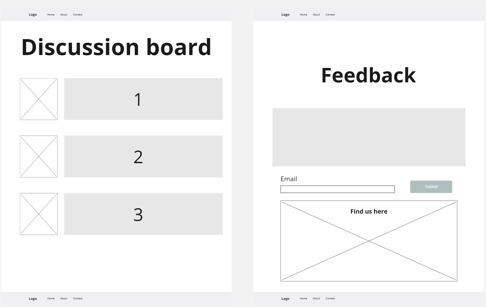
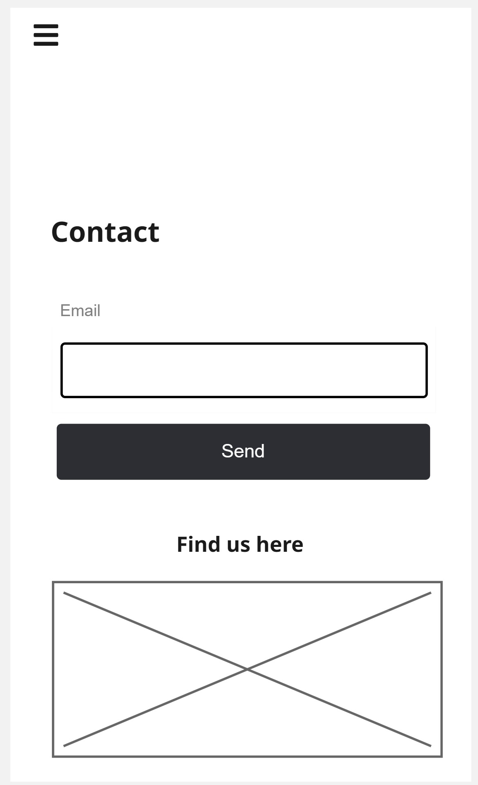
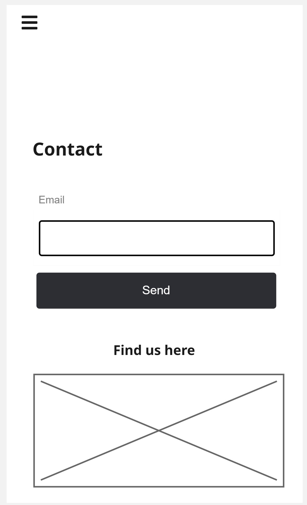
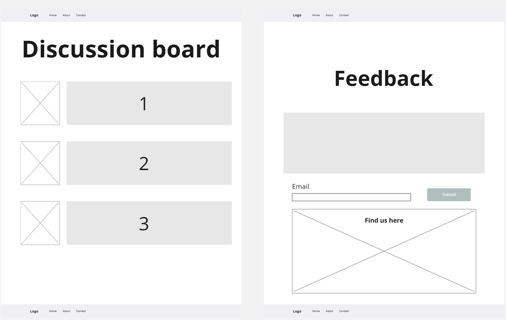
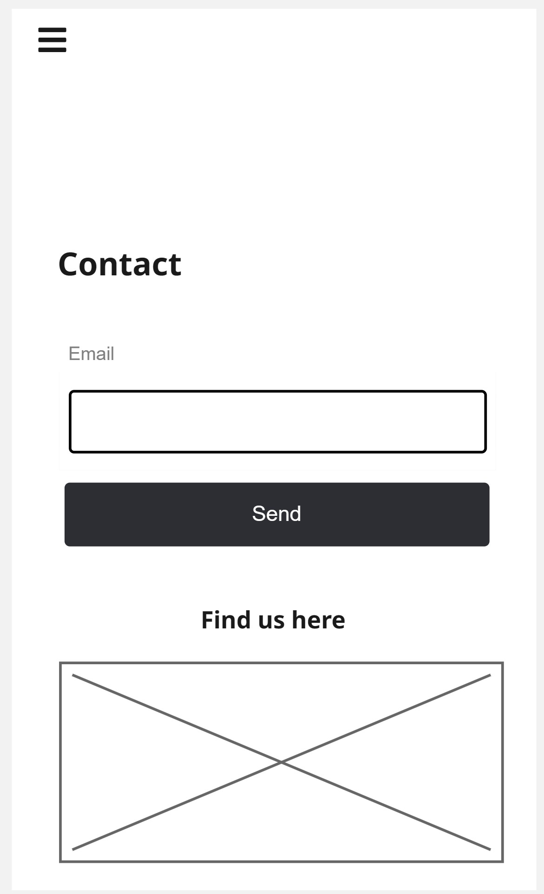

Page Layouts
 



 

I created the initial web page layout using miro and divided it into desktop and mobile versions


Our website uses a modern, gamer-friendly colour palette to ensure readability and strong visual appeal.
Primary Background
#0b1c2c
Secondary Background
#2c3e50
Accent Color
#3498db
Text Color
#ecf0f1
We use bold, impactful headings and clean, readable body text for a gamer-friendly experience.